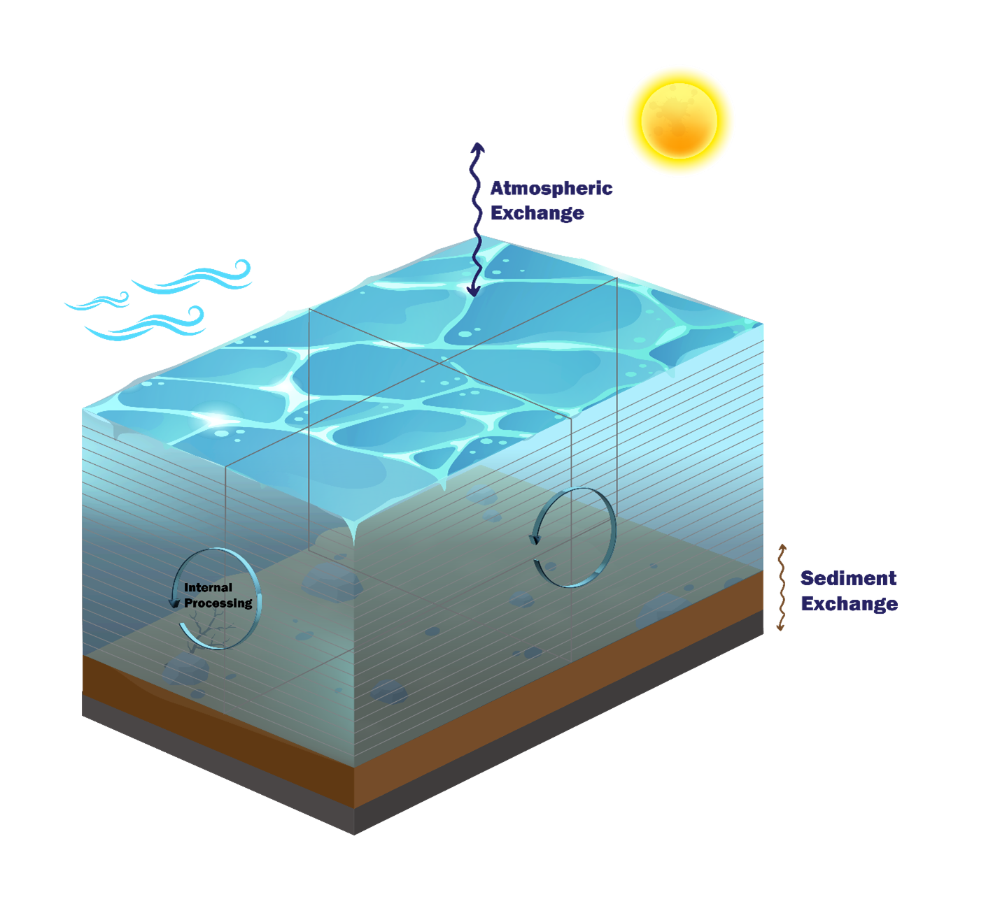
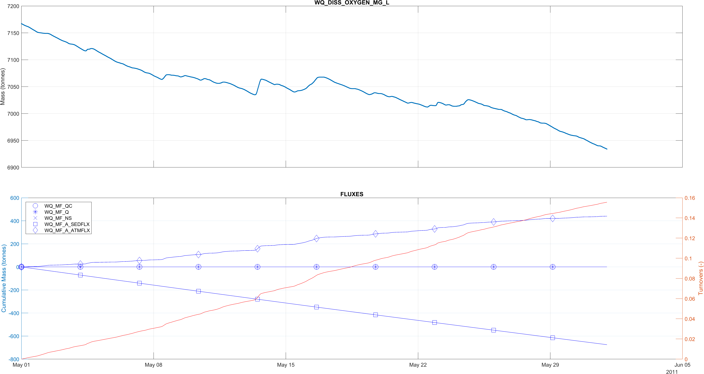
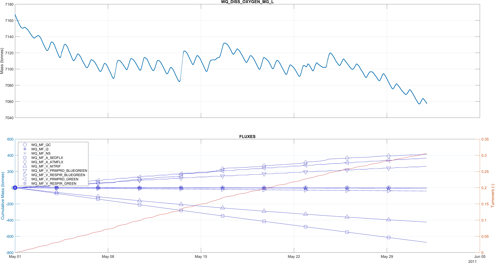
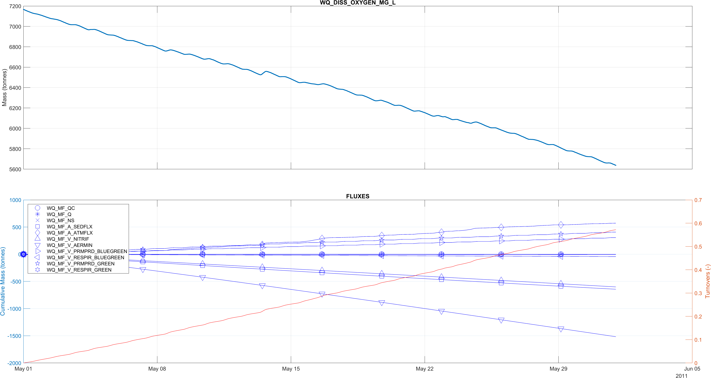

Appendix S — Mass Conservation Model
S.1 Intent
The TUFLOW FV Water Quality (WQ) Module is supported by a downloadable model suite that is intended to provide users with simple three dimensional models that can be used to:
- Assess and understand WQ Module mass conservation performance
- Support exploration of the features and behaviour of the WQ Module
- Use as templates for building water quality control files for other simulations
The suite does not need a licence to execute with either existing or altered water quality parameters.
This Appendix provides information related to the mass conservation model. The model suite can be run on either Windows or linux, however this document describes only the Windows execution process.
S.2 Description
The mass conservation model is configured as follows.
- General
- 1 month (745 hours) duration
- Includes salinity, temperature (and heat calculations), sediment and varying numbers of water quality computed variables
- 15 minute output
- 15 minute water quality simulation timestep
- Designed to mimic a deep lake that cools over an autumnal period
- Geometry
- Four three-dimensional flat bottomed columns, with the same bed elevation
- Lateral cell areas each of approximately 10 km\(^2\)
- Depth of 21 metres
- 20 vertical layers of variable thickness, with 17 fixed and 3 sigma (which span the top portion of the water column)
- Boundary conditions
- No inflows, outflows or other flow boundaries
- Meteorological boundaries applied
- Hourly timestep
- Typical mid latitude autumnal conditions, with rainfall included
- Water quality parameterisation
- Parameters are set to be generally within expected ranges

This setup of essentially stationary water is designed to be challenging for mass conservation. In particular, the exclusion of external flow boundaries (that can reset or overwhelm internal process calculations) is deliberate. These conditions might mimic a low rainfall lacustrine environment.
S.3 Model suite
The mass conservation model suite comprises three (3) related models. The three models increase in a configurational complexity that matches the three currently available water quality simulation classes. These are (with links to the relevant manual sections):
- Water Quality Simulation Class == DO (Section 3.1)
- Water Quality Simulation Class == Inorganics (Section 3.2)
- Water Quality Simulation Class == Organics (Section 3.3)
The mass balance models can be downloaded (see Section S.5) and run as is. The associated mass balance output files can then be interrogated by the user to assess mass balance using any spreadsheet package.
S.4 Calculations
The primary calculation used to assess mass conservation for each computed variable \(X\) is a comparison between two independent calculations of instantaneous mass in the model as follows:
\[ X_{mb}(t) = 100 \times \frac{X_{mp}(t) - X_{mi}(t)}{X_{mi}(t)} \tag{S.1}\]
where \(X_{mb}(t)\) is the percentage difference (column ‘MF_PCT_ERROR’ in mass flux output csv files) between two methods of computing the mass of computed variable \(X\) in the domain:
- \(X_{mp}(t)\): Progressively modifying the initial domain mass by adding to it the sum of the relevant fluxes \(F_i\) at each timestep \(t\) (column ‘MF_WQ_MASS’ in mass flux output csv files). No resetting of this calculation occurs - it is designed (stringently) such that any mass conservation errors will accumulate in time
- \(X_{mi}(t)\): Multiplying the reported concentrations of \(X\) in cell \(j\) of volume \(V_j\) and integrating over the entire model domain at each timestep \(t\) (column ‘FV_WQ_MASS’ in mass flux output csv files). This mass is reset at each timestep and corresponds to the mass reported by TUFLOW FV
\(X_{mp}(t)\) and \(X_{mi}(t)\) are computed as per Equation S.2. \(F_{i}(t)\) are the relevant fluxes for \(X\) (up to a total number of \(i=NF\) fluxes) and are converted from per area (or per volume) and per time amounts to mass amounts. The number of cells in the domain is \(NC\), and \(\left[X\right]_{j}(t)\) is the concentration of computed variable \(X\) in cell \(j\) at time \(t\). The model contains sigma layers and as such \(V_{j}\) may be time varying.
\[ \left.\begin{aligned} X_{mp}(t) =& \sum_{j=1}^{NC} \left[X\right]_{j}(0) \times V_j(0) + \sum_{i=1}^{NF} F_{i}(t) \\ \\ X_{mi}(t) =& \sum_{j=1}^{NC} \left[X\right]_{j}(t) \times V_j(t) \end{aligned}\right\} \tag{S.2}\]
None of the quantities above need to be computed by the user - all are output directly in files created when the Massbalance output block is called (see Section 4.9.2):
Output == Massbalance
Output Interval == 900.00
End OutputAs a general note, reported fluxes often need to be interpreted with care in mass conservation analyses. This is because fluxes are reported as instantaneous values, and are not integrated or accumulated between overall model output file writing timesteps. For example, if water quality calculations are undertaken every 15 minutes but outputs are written every hour, then several water quality calculations are undertaken between reporting. Whilst the hourly output water quality concentrations will correctly reflect the cumulative action of fluxes at every 15 minute increment, the on-the-hour output fluxes will be instantaneous, and equal to those that happen to be occurring at the hourly output time. They will not necessarily be reflective of the fluxes that occurred over the course of the preceding hour. Using these fluxes in mass conservation calculations can therefore lead to spurious outcomes. One solution to this matter is to set the output and water quality (and boundary condition update) timesteps to be the same in mass conservation analyses, noting that this may however generate large output files.
S.5 Access and execution
S.5.1 Access
To download the mass conservation model:
- Download the zip from the TUFLOW website by clicking here (under Example / Demo Models section)
- Unzip the model in a convenient location. For the purposes of this description, the location of the mass conservation model suite is assumed to be:
- ‘C:\TUFLOWFV\Models\’
The above steps will create a subfolder called ‘wqm’ within the chosen folder location. Within this wqm subfolder will be another subfolder called mass_conservation_model. This is where the mass conservation model resides.
S.5.2 Execution
Unzipping the above will generate the folder structure within C:\TUFLOWFV\Models\wqm\mass_conservation_model\ with subfolders as follows:
- bc_dbase: Boundary condition data
- model: Model geometry and related data
- results: Model results (will be empty on initial download)
- runs: TUFLOW FV hydrodynamic and sediment transport control files
- wqm: TUFLOW FV WQ Module control files
After navigating to the runs folder, the mass conservation model can now be executed via a windows command line as normal - the included ‘run_all.bat’ batch file will execute all three models, once the path to the TUFLOW executable has been set. Subsequently generated mass balance outputs can be viewed in any spreadsheet package, or more advanced post processing platforms if desired. Suggested plotting approaches are provided in Section 4.9.2.
S.6 Example results
The following figures provide an example of the progressively more complex dissolved oxygen dynamics that characterise the DO, Inorganics and Organics Simulation Classes. The top pane in each figure is a timeseries of the total mass of dissolved oxygen and the bottom pane plots the cumulative fluxes written to the respective ’*_MASSBALANCE_DISS_OXYGEN_MG_L.csv’ mass balance output files. The number of Turnovers is also plotted on the secondary vertical axis of the lower plot, in orange. No post processing has been performed.


